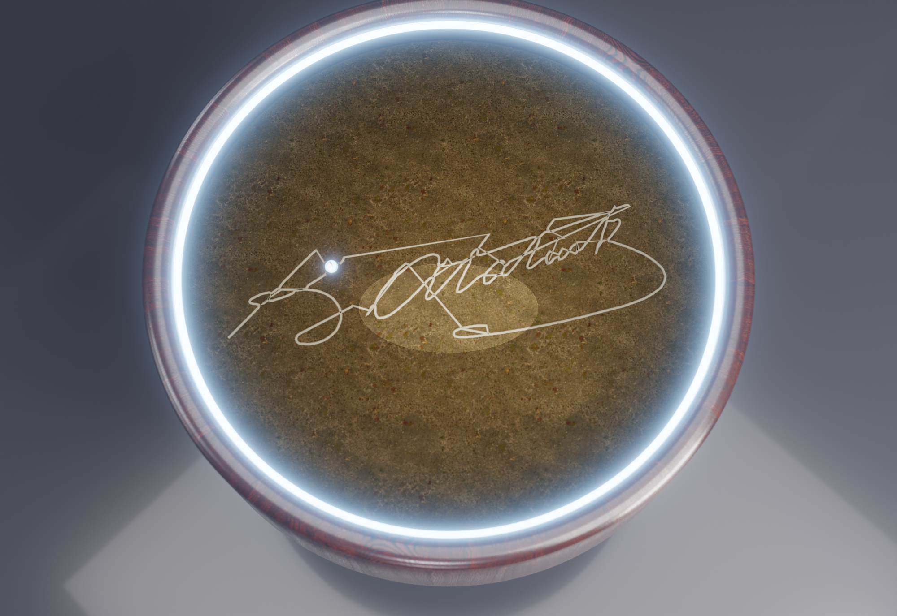
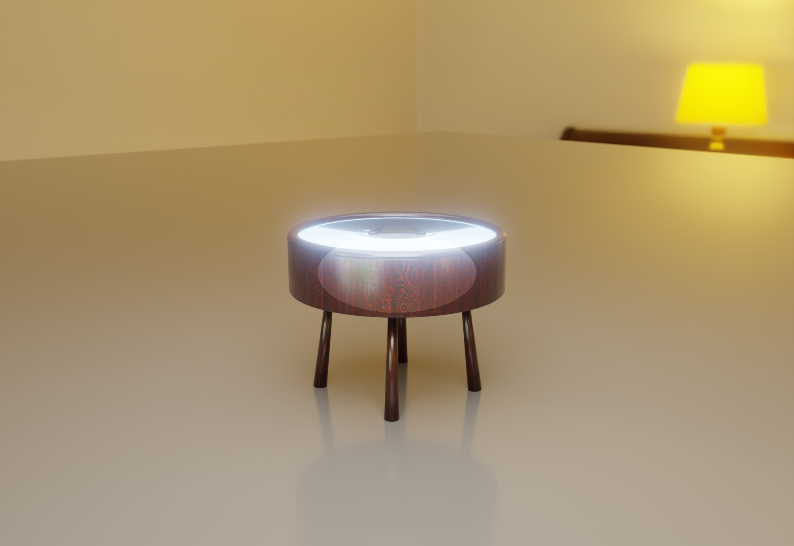
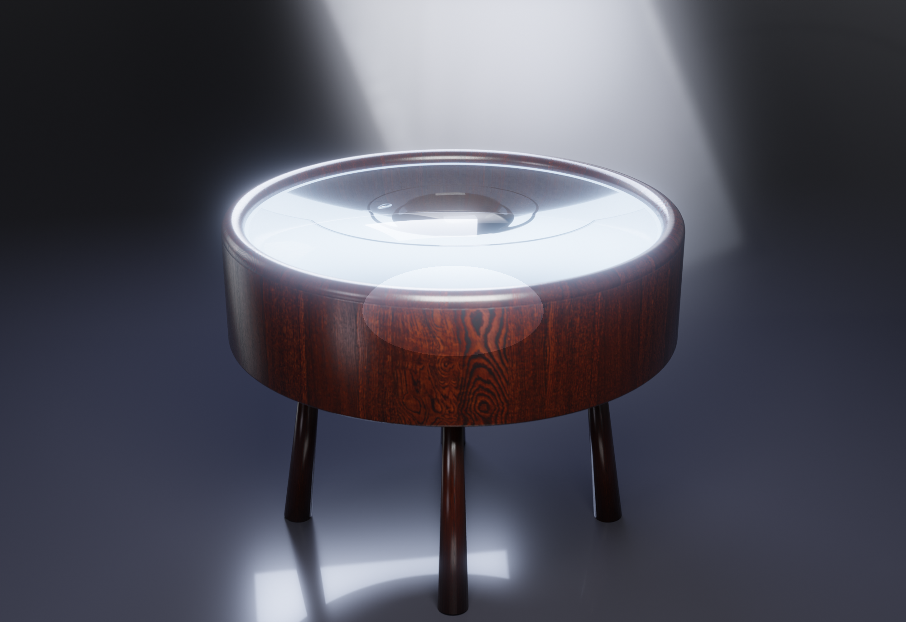

Reklam Filmi
Bilye Atatürk imzasını çiziyor
Kamera yörüngede dönerken çelik bilye, kumda "K. Atatürk" imzasını gerçek zamanlı çiziyor; LED halka yumuşak ışıkla yanıyor. Blender / Cycles, bloom post.
Stüdyo Render'ları
Reklam kalitesinde 4 açı
Gerçek PBR doku haritaları (ceviz + kum), stüdyo HDRI, yumuşak LED — Blender/Cycles, 2K/384 örnek.

Desen (üstten) — Atatürk imzası kuma çizilmiş, ucunda çelik bilye

Ürün çekimi — mat ceviz sehpa, yumuşak LED, parlak zemin

Oturma odası — HDRI ortam, cam üst görünür

Ambiyans — koyu sahne, loş LED halka parıltısı
Nasıl üretildi
Prosedürel sahne
Tüm görseller render/scene.py içinde kod ile kuruluyor (ölçüler sand_table.scad ile aynı):
ahşaba boolean kum havuzu, gerçek .thr desen → kumda oluk, PBR malzemeler, stüdyo/oda HDRI,
kompozitör post (LED bloom + vignette). Desenler firmware/patterns/ (imza izi, spiral).